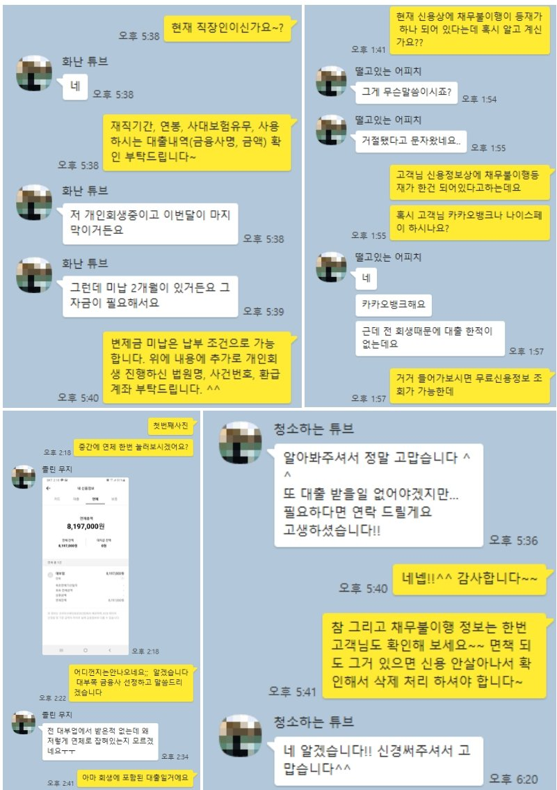

연체정보 등재된 개인회생 진행중인 직장인 대출 승인 사례!!
안녕하세요~ 뱅크앤론 임용현부장입니다. ^^
오늘은 개인회생 진행중 연체정보가 등재된 직장인 대출승인 사례를 안내해 드리겠습니다.
문의 주신 고객님은 재직기간 3년에 연봉 3600만원이신 사대보험 가입된 직장인 이셨습니다.
개인회생 진행중이셨고, 변제 회차 36회중 3.08회 미납이 있었으며 월변제금은 131만원정도 되었습니다.
변제금 납부 하실 목적으로 대출 문의를 주셨는데, 회생 이후 다른 대출이 없고 변제 회차도 길어 중금리 상품으로 진행을 해드리려고 했습니다.
하지만, 개인회생에 포함된 채권중 하나가 연체 해지가 안되어 있는 상황이라 중금리 상품 진행이 어려웠습니다.
이런경우 일반 대부업 대출 진행도 어려운 경우가 많은데, 그동안의 경험을 바탕으로 목록에 포함된 채권이 연체로 잡혀 있어도 진행이 가능한 금융사로 안내해 드렸고, 그 결과 필요하신 금액 400만원을 변제금 납부 조건으로 받으실 수 있었습니다.
이번 대출로 인해 알지 못했던 채무 불이행 정보도 확인하게 되셔서 추후 해지에 관한 내용도 안내해 드려서 고객님도 매우 만족해 하셨습니다. ^^
아래는 해당 고객님과 실제 상담한 카톡 상담내역을 일부 캡쳐하여 올려 드리오니 참고하시어 많은 도움 되셨으면 좋겠습니다. 감사합니다. ^^
